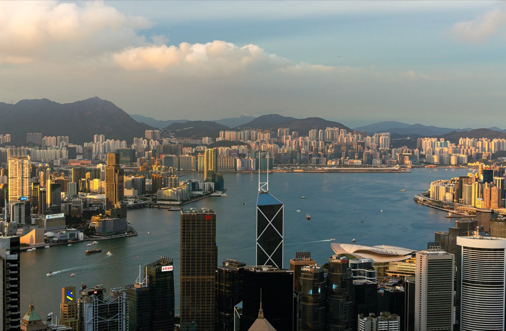
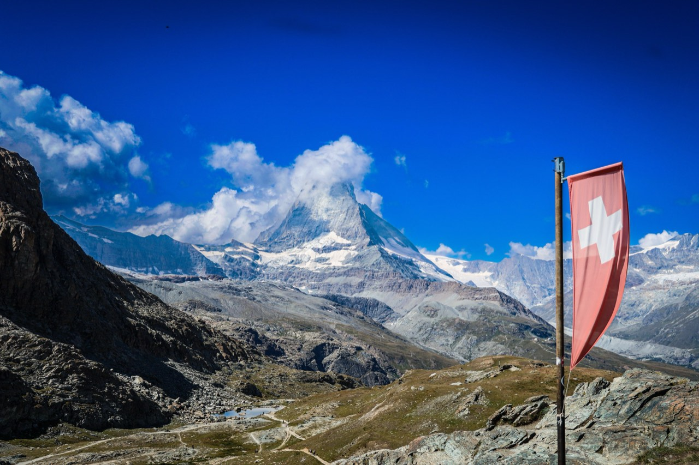
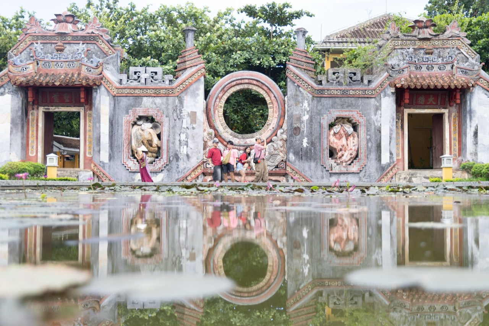
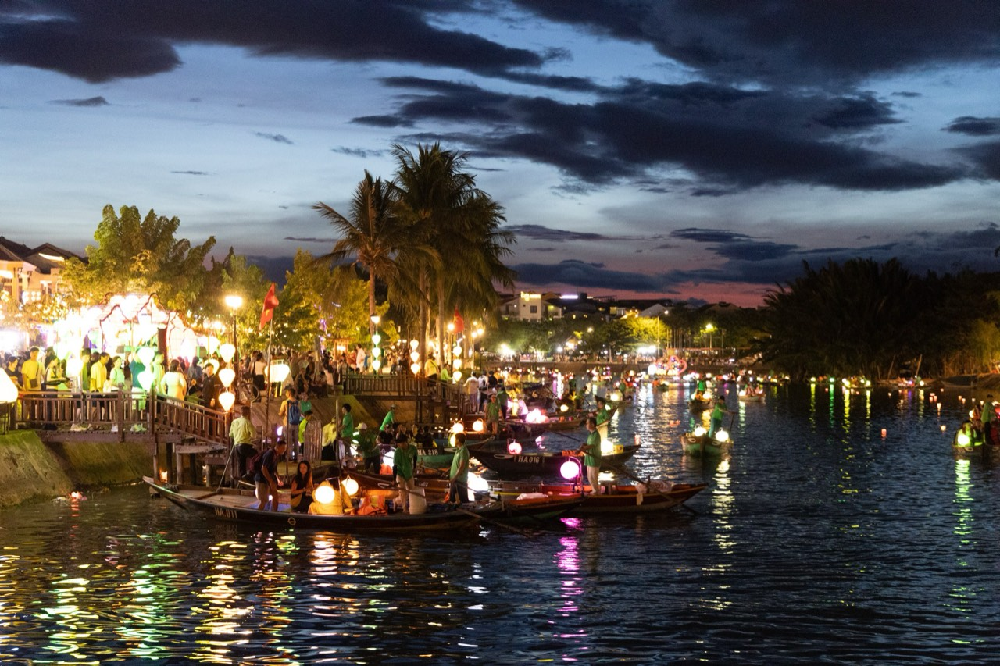
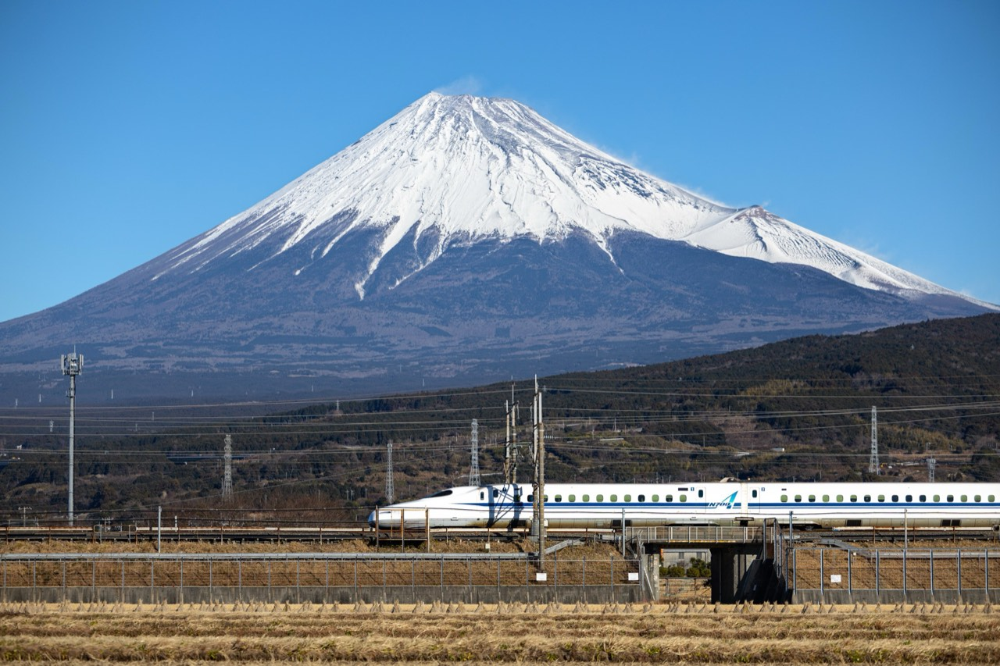

Same place, twice
Five places, each photographed twice. Open either one to see how it was made.


Victoria Harbour


Matterhorn


Hội An


Mount Fuji


Five places, each photographed twice. Open either one to see how it was made.




